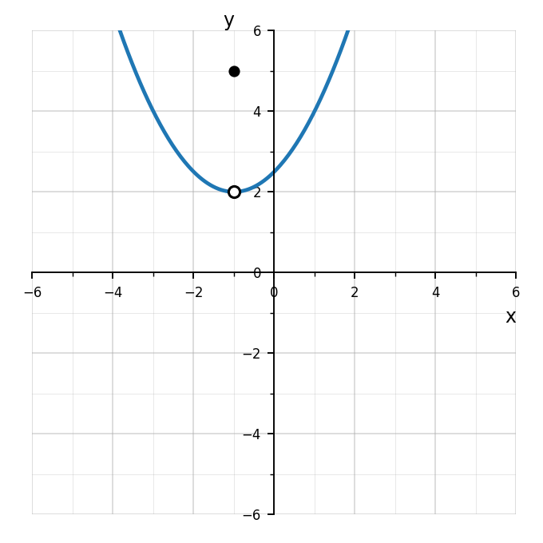
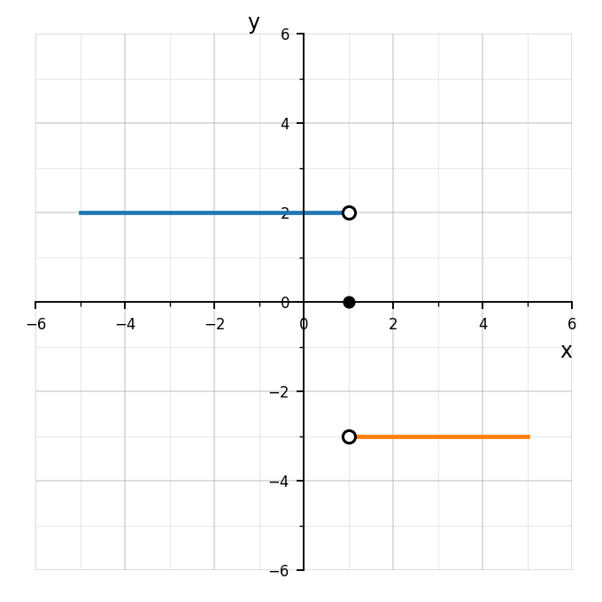
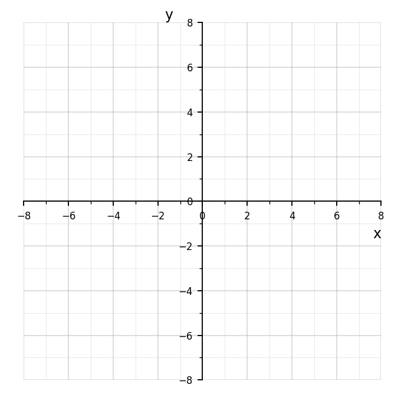

Extra Practice 1.5.4
Use the graph to find \(\lim_{x\to -2^-} f(x)\), \(\lim_{x\to -2^+} f(x)\), and \(f(-2)\).

Use the graph to determine whether the limit exists at \(x=2\). Justify using left-hand and right-hand limits.

Use the graph to explain why changing one point on a graph may not change the limit.

Design a graph that includes a hole, a jump, and a point where the limit exists but is not equal to the function value. Label the important points and write one limit statement for each feature.
For each quadratic, state whether the graph opens up or down.
\(y=3x^2-5x+1\)
\(y=-x^2+8x-12\)
\(y=-\frac14x^2+2x+9\)
\(y=0.8x^2-3x\)
For each quadratic, determine whether the vertex is a maximum or a minimum.
\(y=x^2+6x+2\)
\(y=-2x^2+4x+5\)
\(y=5(x-3)^2-8\)
\(y=-\frac12(x+1)^2+7\)
For each function, identify the domain.
\(y=x^2-5x+6\)
\(y=-2(x-1)^2+4\)
\(y=0.5x^2+7x-2\)
Fill in the blanks.
For a quadratic function that opens upward, the vertex represents a ______ value.
For a quadratic function that opens downward, the vertex represents a ______ value.
The graph of every quadratic function has a vertical line of symmetry called the ______.
Graph the function
\(y=x^2-4x-5\)
Then identify:
vertex
axis of symmetry
\(x\)-intercepts
\(y\)-intercept
range

A quadratic model is given by
\(P(x)=-2x^2+20x-18\)
where \(P(x)\) is profit in hundreds of dollars.
Find the break-even points.
Find the value of \(x\) that maximizes profit.
Find the maximum profit.
Explain what the zeros mean in context.
A ball’s height is modeled by
\(h(t)=-16t^2+80t+4\).
A student says the ball reaches its maximum height at \(t=80\) seconds because \(b=80\).
Explain the mistake and find the correct time.
A rocket’s height is modeled by
\(h(t)=-5t^2+40t+45\)
where \(t\) is time in seconds and \(h(t)\) is height in meters.
Find the initial height.
Find the maximum height.
Find when the maximum height occurs.
Find when the rocket reaches the ground.
State a reasonable domain and range.
Explain which key features are meaningful in context.
If \(h(x)=3x^2-2x+1\), evaluate each.
\(h(1)\)
\(h(-1)\)
\(h(0)\)
\(h(2)\)
Simplify each expression before evaluating.
\(\frac{x^2-9}{x-3},\quad x=5\)
\(\frac{x^2+5x+6}{x+2},\quad x=4\)
\(\frac{x^2-16}{x+4},\quad x=10\)
A function machine takes an input, squares it, then subtracts \(4\).
Write the function formula.
Find the output for inputs \(-3\), \(0\), and \(3\).
Explain why two different inputs can give the same output.
Explain why reversing this function may require a restricted domain.
Create a function-readiness task that satisfies all of the following:
- it includes function notation
- it requires substitution
- it has at least one equivalent-expression step
- it connects to a table or graph
- it includes a restriction or explanation of when an input is not allowed
Then:
Write your original task.
Solve the task completely.
Explain which algebraic skills are being used.
Explain how the task prepares a student for Unit 1 function work.